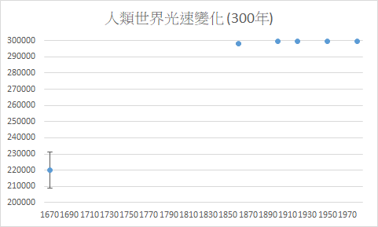
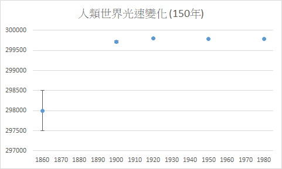
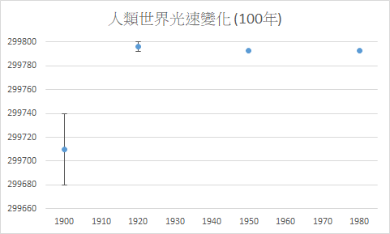

當地物理常數
所有物理常數都不是不變的，會隨著時空而變化；不同的時空物理常數可能有所不同。一般而言，我們會測量每個地區的「當地光速」、「當地重力常數」以及「當地圓周率」，其他當地物理常數皆可由這三者推出。就目前觀測的記錄，同一時間同一個宇宙中每一個位置的光速皆相同，光速只會隨時間變化，其他物理常數則是隨時間和位置變化。
當地光速



當地光速，指光在當地真空中的速率，精確值會隨時空改變。在人類世界，1675年時測到的數值只有 220,000 km/s，1862年時已加速到 298,000 km/s，1907年又測到更快的 299,710 km/s，1926年來到高峰，299,796 km/s，接著光速逐年下降。1958年到現在，為 299,792 km/s，目前光速正在持續下滑。由於早期測量誤差大，我畫了有誤差線的圖方便比較。
當地重力常數
當地萬有引力常數，是一個包含在對有質量的物體間的萬有引力的計算中的當地實驗物理常數，精確值會隨時空改變。人類世界的當地重力常數是